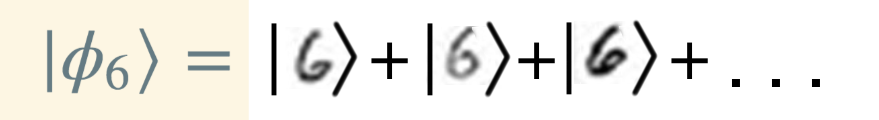

Matrix Product State Inspired Tensor Train:
Using Quantum Mechanics for Machine Learning
Irene Li, Taketomo Isazawa
Supervisor: Dr Austen Lamacraft
Bibliography
- Stoudenmire, E. Miles, and David J. Schwab. "Supervised learning with quantum-inspired tensor networks." (2016)
- Novikov, Alexander, Mikhail Trofimov, and Ivan Oseledets. "Exponential machines." (2016)
Machine Learning $\rightarrow$ Quantum Physics

Matrix Product State (MPS)
- A quantum many-body system $$ \lvert \psi \rangle = \sum_{{s_1}{s_2}{s_3}\dots{s_n}}W_{{s_1}{s_2}{s_3}\dots{s_n}} \lvert {{s_1}{s_2}{s_3}\dots{s_n}} \rangle $$
- As a matrix product state $$ W_{{s_1}{s_2}{s_3}\dots{s_n}} \approx M^{(1)}_{{s_1}{\sigma_1}} M^{(2)}_{{s_2}{\sigma_1}{\sigma_2}} M^{(3)}_{{s_3}{\sigma_2}{\sigma_3}} \dots M^{(n-1)}_{{s_{n-1}{\sigma_{n-1}}{\sigma_{n}}}}M^{(n)}_{{s_n}{\sigma_n}} $$
- Graphical tensor notation
- MPS is a way to bypass the curse of dimensionality in many body physics
Amplitudes and probabilities
- In quantum mechanics
$$ P(\phi) = \vert \langle \phi \vert \psi \rangle \vert ^2 \text{ with normalisation } \langle \phi \vert \phi \rangle = 1 \text{ and } \langle \psi \vert \psi \rangle = 1 $$ - E.g. overlap amplitude between a product state and an MPS for a spin chain $$ \lvert \phi \rangle = \prod_i \left ( c^{(i)}_1 \lvert \uparrow \rangle + c^{(i)}_2 \lvert \uparrow \rangle \right ) \\ \langle \phi \vert \psi \rangle = \sum_{{s_1}{s_2}{s_3}\dots{s_n}}W_{{s_1}{s_2}{s_3}\dots{s_n}}c^{(1)}_{s_1}c^{(2)}_{s_2}c^{(3)}_{s_3}\dots c^{(n)}_{s_n} $$
Canonical form
- Norm

- Left and right normalised matrices
$$ U_{(s_j \sigma) \rho} U_{(s_j \sigma) \gamma} = \delta_{\rho \gamma}
\: \text{ and } \: V_{s_j \rho \sigma} V_{s_j \gamma \sigma} = \delta_{\rho \gamma} $$
- Use singular value decomposition (svd) : $ M = USV $


Modified MPS for Supervised Classification
-
Lay the input data along the chain
$$ f^l = W^l_{{s_1}{s_2}{s_3}\dots{s_n}} x^{(1)}_{s_1} x^{(2)}_{s_2} x^{(3)}_{s_3} \dots x^{(n)}_{s_n} $$ Want $f$ to be one-hot vector: $[0, 0, 0 \dots 1 \dots 0]$
-
Represent $W$ by a modified MPS
$$ W^l_{{s_1}{s_2}{s_3}\dots{s_n}} \approx M^{(1)}_{{s_1}{\sigma_1}} M^{(2)}_{{s_2}{\sigma_1}{\sigma_2}} M^{(3)}_{{s_3}{\sigma_2}{\sigma_3}} \dots M^{(k)l}_{{s_k}{\sigma_k}{\sigma_{k+1}}} \dots M^{(n-1)}_{{s_{n-1}{\sigma_{n-1}}{\sigma_{n}}}}M^{(n)}_{{s_n}{\sigma_n}} $$
Preprocessing the input data
- Recall the normalisation requirement
- Categorical data (e.g. character) $\rightarrow$ one-hot vector
- Real number in a range (e.g. MNIST handwritten digits)
- Option 1: $\left[\cos(\pi x/2), sin(\pi x/2)\right]$
- Option 2: $\left[1, \sqrt{3} (2x -1) \right]$
- Option 3: $\left[\exp(i3\pi x/3)cos(\pi x/2), \exp(-i3\pi x/2)sin(\pi x/2)\right]$
- Real number ?
How to train a tensor train?
- Stochastic Gradient Descent
- Density Matrix Renormalisation Group (DMRG)
(Single-site and two-site) - The Rounding Method
- Any combination of the above
Two-site DMRG

Two-site DMRG
Two-site DMRG pros and cons
- Pros
- Analytic form for gradient
- Fast convergence
- Can capture long range correlations
- Light weight model
- Cons
- cost = $\mathcal{O}(d_{in}^3 m^3 d_{out} L N)$
- Tricks for conventional neural nets not applicable
(e.g. momentum)
The Rounding Method
Better cost but dimensions of all matrices are kept the same
Tricks for training
- Linear regression initialisation
- Use Newton's method $g/h$
- Finetune the learning rate dynamically
- Use cross entropy as the lost function
- Dropout
Results for MNIST
| Init | Max matrix dimension | Accuracy | ||
|---|---|---|---|---|
| Lin Reg | N/A | N/A | $92\%$ | |
| 2-site DMRG | None | 20 | ||
| 2-site DMRG | Lin Reg | 20 | ||
| 2-site DMRG | SGD | 20 | ||
| 2-site DMRG | Lin Reg | 50 | ||
Sampling with MPS
Generate MNIST-like data given label
- $P(x_1 x_2 \dots x_n) = P(x_1) P(x_2\vert x_1) \dots P(x_n \vert x_1 x_2 \dots x_{n-1}) $
- Sampling $\longleftrightarrow$ unzipping
Prospects
- Try on more 1d datasets
- Enforcing periodicity
- Extend to variable length sequences
Thank you!
Visit our github repo at https://github.com/TrMPS/MPS-MNIST